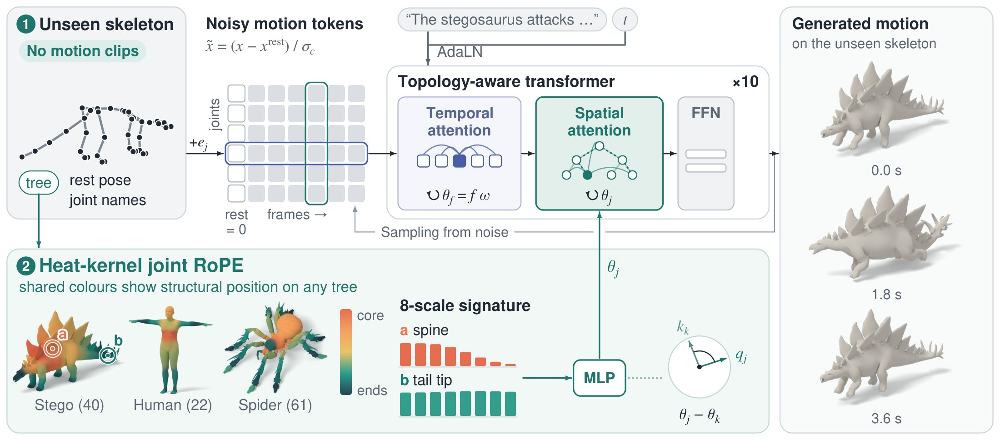
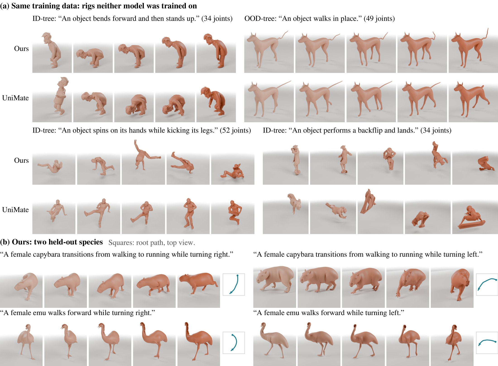

Text-to-motion models generate motion only for the skeletons they were trained on, while a new character arrives as a skeleton file and nothing else. We study text-to-motion for skeletons unseen in training, without clips of the character, templates, retargeting or fine-tuning. We present TopX, a 73M-parameter flow-matching transformer that generates joint rotations and a root trajectory for any skeleton from its kinematic tree, rest pose and joint names. Motion is normalised by the rest pose and the size of the skeleton, and the rest pose is encoded as a world-frame descriptor that is independent of how the rig's author oriented each joint, while rest conventions are randomised during training. Attention is factorised over the joints and the frames of a motion. Across joints, queries and keys are rotated by HK-RoPE, a heat-kernel rotary encoding of the skeleton graph that is defined for every tree and does not change with the order of its joints or the eigenbasis of its Laplacian; across frames, they are rotated by a rotary encoding of frame order.
To evaluate this generalisation, we build SkelShift, which unifies four motion corpora under one codec and holds out whole skeletons, tree classes and species, so that each test bucket isolates one kind of skeleton shift: topology, joint count, body plan, species or rig source. It scores motion quality without a learned evaluator. A single model animates every benchmark skeleton (4–117 joints) directly from its skeleton file and generates up to 240 frames. On held-out game species its motion is about as close to the real clips as two halves of the real clips are to each other (kernel distance 0.127 against 0.124), and text-to-motion retrieval reaches R@1 0.953, compared with 0.929 for real motion.
MethodFactorised attention with HK-RoPE

❶ No clips of an unseen skeleton are needed. Its tree, rest pose and joint names give each joint a feature (an MLP of tree and rest-pose features plus the LLM2Vec embedding of the joint's description). The motion tokens, one per joint and frame, are normalised by the rest pose and the skeleton's size, so that the rest frame maps to zero. ❷ Each of ten blocks attends over time with queries and keys rotated by θf = fω, and over joints with queries and keys rotated by HK-RoPE, whose angle θj is an MLP of joint j's heat-kernel signature at eight scales on the tree, together with a bias on tree hops. Mesh colours show the first principal component of the log signature, on a colour scale shared by all skeletons. The caption and the flow time condition the network through AdaLN.
Any treeThe heat-kernel signature is defined for every skeleton and does not depend on the order of its joints.
Skeleton file onlyTree, rest pose and joint names; no clips, templates, retargeting or fine-tuning.
Drives the rigOutputs joint rotations and a root trajectory, exported as BVH of the input hierarchy.
SkelShiftEach test bucket holds out one kind of skeleton shift
SkelShift unifies the Objaverse-XL subset of UniML3D, the AniMo4D animal library with HumanML3D, further species from the same game library, and the Truebones zoo under one codec: 139,102 training clips on 5,127 rigs with 6 to 142 joints. The test set holds out clips, rigs, classes of isomorphic trees and species.
Bucket
Source
Unseen at test time
Test clips
Rigs
Joints
ID-clip
UniML3D
clips of training rigs
172
135
10–60
ID-tree
UniML3D
rigs whose tree is seen
508
759
6–60
OOD-tree
UniML3D
tree classes (bipeds, quadrupeds)
320
333
11–60
OOD-plan
UniML3D
tree classes of rare body plans
62
70
5–60
OOD-J>60 (Mixamo)
UniML3D
rigs of one 65-joint humanoid tree
350
250
65
OOD-J>60 (other)
UniML3D
rigs above the corpus's joint range
512
464
61–117
OOD-J<5
UniML3D
rigs below that range
1
2
4
OOD-species
game
four species, three rigs each
635
12
41–66
OOD-new-species
game
rigs of ten untrained species
47
10
28–78
OOD-rig
Truebones
eight quadruped rigs
62
8
31–49
Results on unseen skeletonsWhole outputs, up to 240 frames, played in real time
Stick figures drawn from the generated joint positions, frame by frame, with no smoothing. The large view follows the root joint; the small view below is a fixed camera that shows where the skeleton travels. Clips were chosen by a fixed rule on the real test clips (the most energetic and the longest of each subset), not by looking at generated motion.
Truebones skeleton “The stegosaurus raises its head slightly and shakes its body from side to side”Stego · 40 joints · 200 frames
Truebones skeleton “The stegosaurus performs a tail whip by rotating its tail from right to left”Stego · 40 joints · 140 frames
Truebones skeleton “The cat stretches and yawns, then returns to a sitting position”Cat · 43 joints · 199 frames
Truebones skeleton “The goat quickly steps back, jumps forward, and mimics a headbutting motion before returning to its original position”Goat · 31 joints · 110 frames
Truebones skeleton “The turtle prepares and executes an attack by rolling forward”Turtle · 49 joints · 180 frames
Held-out species “A female capybara changes pose, with movement of its head and forelimbs.”Capybara · 66 joints · 240 frames
Untrained species “A spectacled flying fox changes pose, with movement of its forelimbs and head.”Spectacled flying fox · 70 joints · 130 frames
Untrained species “A danube crested newt changes pose, with movement of its tail and head.”Danube crested newt · 68 joints · 240 frames
More than 60 joints “An object runs in place and does a handstand.”65-joint humanoid · 240 frames
More than 60 joints “An object dances in place.”65-joint skeleton · 240 frames
Rendered on the rig's own mesh

Samples on unseen test skeletons, each drawn on the rig's own mesh: five frames at equal times, light to dark. (a) TopX and UniMate trained on the same clips, on four rigs that neither was trained on. (b) TopX on two held-out game species; squares show the root path from above.
BibTeX
@article{sun2026topx,
title = {TopX: Text-to-Motion for Unseen Skeletons from the Skeleton File Alone},
author = {Sun, Tengjiao and Fang, Pengcheng and Zhan, Xiaoyu and Fu, Dongjie and Cai, Xiaohao and Kim, Hansung},
journal = {arXiv preprint arXiv:2610.34321},
year = {2026}
}